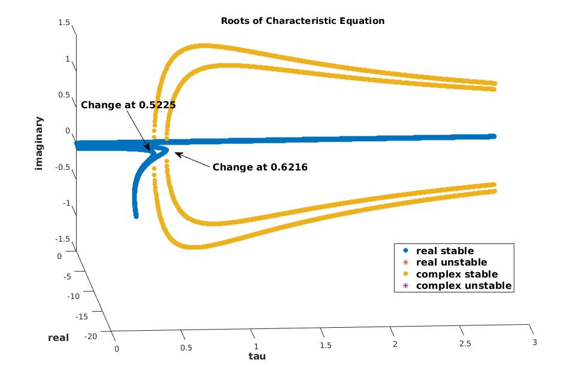

Research
My primary research interest is in the use of mathematics in epidemiology. Compartmental models provide a highly customizable framework from which many diseases may be studied. For example, the well-known Kermack-McKendrick (or SIR) model divides the population according to the stage of the disease and then tracks movement between the compartments using a system of nonlinear ordinary differential equations (ODEs).
In particular, I investigate how delay differential equations (DDEs) may be used to accurately model the development of an infectious disease. While similar to ODEs in many ways, DDEs result in strikingly different behavior which may help to better account for certain disease dynamics; however, incorporating DDEs makes the dynamical system even more challenging to analyze.
Currently, I am working on a project to model the spread of a disease through a metapopulation with delayed dispersal. Our preliminary numerical results indicate thresholds for which the system's behavior drastically changes. Through further analysis, we hope to determine what conditions result in an epidemic or the disease becoming endemic.
I have also become interested in how to formulate a simlar problem in a continuous spatial region. In order to do this, I'm investigating the parallels between delayed differential equations and partial differential equations, and more specifically how the two different models may inform each other.